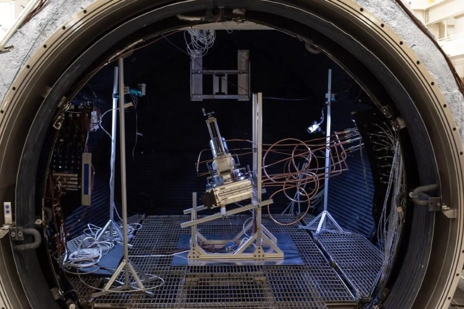

နာဆာက သိပ္ပံ ပညာရှင် တွေဟာ လ ရဲ့ မြေသား နမူနာ ကနေ အောက်ဆီဂျင်ကို အောင်မြင်စွာ ထုတ်ယူနိုင်ခဲ့ပြီလို့ နာဆာရဲ့ ထုတ်ပြန်ချက် အရ သိရပါတယ်။
ဒီ သုတေသန စမ်းသပ်မှုမှာ လ ရဲ့ သဘာဝ ပတ်ဝန်းကျင် အခြေအနေ တွေနဲ့ တူညီအောင် ပြုလုပ်ထားတဲ့ ဓါတ်ခွဲခန်း အတွင်းမှာ လပေါ် က ကောက်ယူခဲ့တဲ့ မြေသား နမူနာကို အသုံးပြုပြီး အောက်ဆီဂျင် ထုတ်ယူနိုင် ခဲ့တာ ဖြစ်ပါတယ်။ ဒါဟာ လပေါ်မှာ လူသားတွေ တာရှည် အခြေချ နိုင်ဖို့ အရေးပါတဲ့ အောင်မြင်မှု တရပ် ဖြစ်တယ်လို့ နာဆာရဲ့ ထုတ်ပြန်ချက်မှာ ဖေါ်ပြ ထားပါတယ်။
အခု သုတေသန အောင်မြင်မှုဟာ လပေါ်ကို လူသားတွေ ပြန်လည် ခြေချဖို့ နာဆာရဲ့ အာတီးမီးစ် (Artemis Mission) စီမံကိန်း နဲ့ ကြိုးပမ်းနေတဲ့ ကာလနဲ့လဲ တိုက်ဆိုင် နေပါတယ်။ ဒီ အာတီးမီးစ် စီမံကိန်းရဲ့ ရည်မှန်းချက် တွေအနက် တခုကတော့ လပေါ်မှာ လူသားတွေ တာရှည် အခြေချ နိုင်ဖို့ အခြေချ စခန်းတွေ တည်ဆောက်ရေးလဲ ပါဝင်ပါတယ်။
ဒီလို တာရှည် အခြေချ နေထိုင်ဖို့ ဆိုရင် အောက်ဆီဂျင် အလုံအလောက် ရရှိနိုင်ဖို့က အရေး ကြီးလာပါတယ်။ လိုအပ်တဲ့ အောက်ဆီဂျင်ကို ကမ္ဘာမြေကနေ သယ်ဆောင်ဖို့ ဆိုတာ ရေရှည်မှာ လက်တွေ့ မကျပါဘူး။ ဒီတော့ လပေါ်မှာ အောက်ဆီဂျင် ထုတ်နိုင်တဲ့ နည်းလမ်း ရှာဖွေဖို့ လိုအပ် လာပါတယ်။
အခု ပြုလုပ်တဲ့ သုတေသန စမ်းသပ်မှုကို အမေရိကန် ပြည်ထောင်စု ဟူစတန် မြို့မှာ ရှိတဲ့ နာဆာ ရဲ့ ဂျွန်ဆန် အာကာသ ဗဟိုဌာန (NASA’s Johnson Space Center in Houston) ပြုလုပ်ခဲ့တာ ဖြစ်ပါတယ်။ ဒီ သုတေသနမှာ အသုံးပြု ခဲ့တဲ့ လမြေသားဟာ လကမ္ဘာရဲ့ အပေါ်မှာ ဖုံးလွှမ်းနေတဲ့ နုညက်တဲ့ မြေမှုံတွေ ဖြစ်ပါတယ်။ ဒါဟာ လေမဲ့ အခြေအနေ အောက်မှာ လမြေသား ကနေ ပထမဆုံး အောင်အောင်မြင်မြင် အောက်ဆီဂျင် ထုတ်ယူ နိုင်ခဲ့တာလဲ ဖြစ်ပါတယ်။
အခု စမ်းသပ်မှုမှာ လပေါ်က အခြေအနေ တွေကို ဖန်တီးနိုင်ဖို့ ၁၅ ပေ အချင်းရှိတဲ့ အလုံပိတ် လေမဲ့အခန်းကို အသုံးပြု ခဲ့ကြပါတယ်။ ဒီအခန်းကို Dirty Thermal Vacuum Chamber လို့ အမည် ပေးထား ပါတယ်။
ဒီအခန်းထဲမှာ လ မြေသား ကို carbothermal reactor ထဲ ထည့်ပြီး လေဆာနဲ့ ထိုး အပူ ပေးလိုက်ပါတယ်။ ဒီလေဆာဟာ လပေါ် ကျရောက်တဲ့ နေရောင်ခြည်ကို စုပေးတဲ့ မှန်ဘီလူးက ထွက်တဲ့ အပူချိန်နဲ့ တူညီအောင် ချိန်ညှိထားတဲ့ လေဆာတန်း ဖြစ်ပါတယ်။ ဒီ carbothermal reactor ဟာ အောက်ဆီဂျင်နဲ့ ကာဗွန်နဲ့ ပေါင်းပြီး ကာဗွန်မိုနောက်ဆိုဒ် (သို့) ကာဗွန်ဒိုင် အောက်ဆိုဒ်အဖြစ် ပြောင်းလဲပေးနိုင်တဲ့ ဓာတုဗေဒ နည်းစနစ် တစ်ခု ဖြစ်ပါတယ်။
ဒီလို လေဆာနဲ့ ထိုးလိုက်ပြီးတဲ့နောက် လေမဲ့ ဓါတ်ခွဲခန်း ထဲမှာ ဘာဓါတ်ငွေ့တွေ ထွက်ပေါ် လာသလဲ ဆိုတာကို စစ်ဆေး ကြည့်ခဲ့ ကြပါတယ်။ ဒီအခါ ဒီ လေမဲ့ခန်း အတွင်းမှာ ကာဗွန်မိုနောက်ဆိုဒ် ဓါတ်ငွေ့အနည်းငယ် ထွက်ပေါ် လာခဲ့တာကို တွေ့ကြရ ပါတယ်။ ဒီ ကာဗွန်မိုနောက်ဆိုဒ် ဓါတ်ငွေ့ဟာ လမြေသားက ထွက်လာတဲ့ အောက်ဆီဂျင်နဲ့ ကာဗွန် တို့ carbothermal reactor အတွင်း ဓါတ်ပြုပြီး ဖြစ်ပေါ်လာခြင်းပဲ ဖြစ်ပါတယ်။
အခု နည်းပညာဟာ လပေါ်မှာ အောက်ဆီဂျင် အမြောက်အများကို တစ်နှစ်ပတ်လုံး ထုတ်လုပ်ပေးနိုင်တဲ့ အစွမ်း ရှိကြောင်း နာဆာရဲ့ အကြီးတန်း အင်ဂျင်နီယာ တစ်ဦးဖြစ်သူ အေရွန် ပါဇ် (Aaron Paz) က ရှင်းပြပါတယ်။
လပေါ်မှာ အောက်ဆီဂျင် အဆက်မပြတ် ထုတ်ပေးနိုင်ဖို့ဆိုရင် အောက်ဆီဂျင် ထုတ်စက်ဟာ လေမဲ့တဲ့ ဝန်းကျင်မှာ အဆက်မပြတ် အလုပ်လုပ်နိုင်စွမ်း ရှိရမှာ ဖြစ်ပါတယ်။ ဒါ့အပြင် ထွက်လာတဲ့ အောက်ဆီဂျင် ကိုလဲ လေဟာနယ်ထဲ ဆုံးရှုံး မသွားအောင် ဖမ်းထားနိုင်ဖို့ လိုအပ်ပါတယ်။ တချိန်ထဲမှာ လမြေသားကို အဆက်မပြန် ထည့်သွင်းပေးနိုင်ရမှာ ဖြစ်ပြီး အသုံးပြုပြီးတဲ့ မြေသားတွေ ကိုလဲ အဆက်မပြန် စွန့်ထုတ်နိုင်စွမ်း ရှိရမှာ ဖြစ်ပါတယ်။
နာဆာက ပညာရှင် တွေကတော့ ဒီလို လက်တွေ့ ထုတ်လုပ်နိုင်တဲ့ အဆင့်ရောက်ဖို့ သိပ်မကြာတော့ဖူးလို့ ယုံကြည် ကြပါတယ်။
Ref: Breathing Moon Dust: NASA’s Breakthrough in Lunar Oxygen Extraction | Scitech Daily
လ မြေသားမှ အောက်ဆီဂျင် အောင်မြင်စွာ ထုတ်ယူနိုင်ပြီ

May 3, 2023
Other Posts
- ရိုးရွိုက်စ်ရဲ့ ကမ္ဘာ့အမြန်ဆုံး လျှပ်စစ်စွမ်းအားသုံး လေယာဉ်
- ကမ္ဘာ့လေထု ဘယ်လို ဖြစ်လာလဲ
- မြွေထီးတွေမှာ လိင်အင်္ဂါ နှစ်ခုပါတယ်ဆိုတာ သင်သိသလား
- အာကာသယာဉ်မှူးတွေ ကမ္ဘာကို ဘယ်လို ပြန်ဆင်းလဲ
- မိုင်းထိသွားတဲ့ မြန်မာ့လေကြောင်းပိုင် ဒါကိုတာလေယာဉ်ကြီးကို ပြင်ဆင်ခဲ့စဉ်က
- ဖလက်ရှ်ကတ် (Flash Card) သုံးပြီး ဖိုးနစ် (Phonics) စသင်ရအောင်
- ဘာ့ကြောင့် ရေဘဝဲဟာ မျိုးပွားအပြီး ကိုယ့်ကိုယ်ကို သတ်သေ ရတာလဲ
- မံမီ ကျိန်စာကို သိပ္ပံပညာရှင်တွေက ဘယ်လိုအကြောင်းပြသလဲ
- Stephen Hawking ကို မသန်မစွမ်း ဖြစ်စေခဲ့တဲ့ ALS ရောဂါ
- ကမ္ဘာ့ဗဟိုအူတိုင် အပူချိန် ပိုမိုလျှင်မြန်စွာ အေးလာနေ